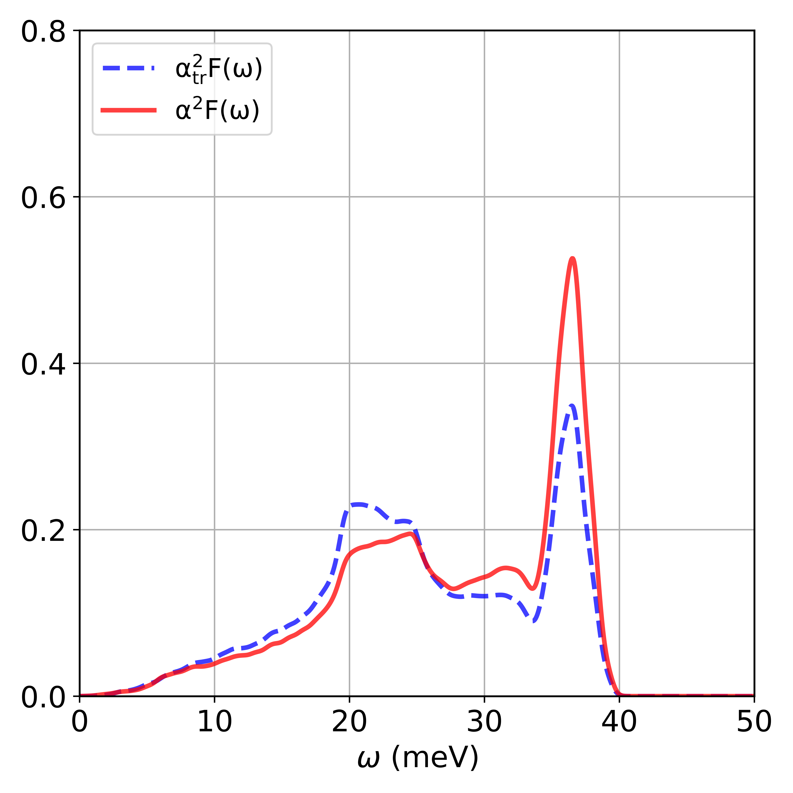
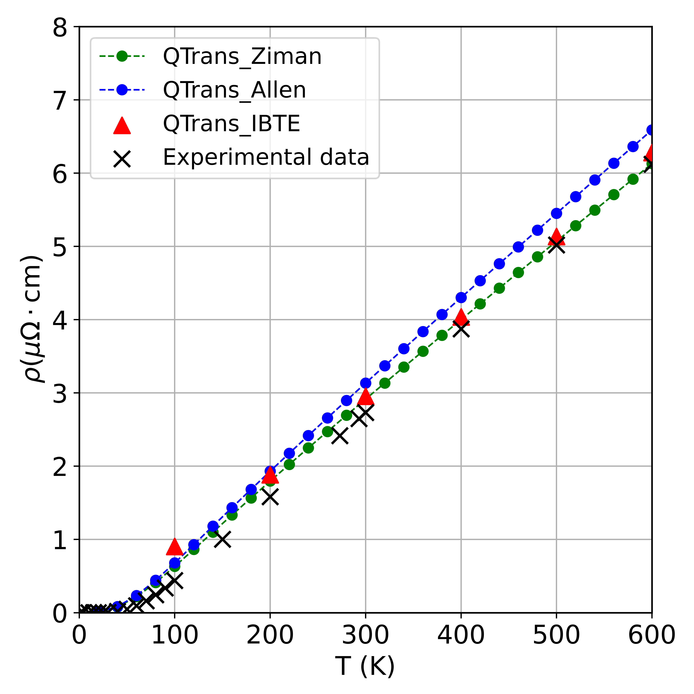

Resistivity Calculation
In this tutorial, we will show how to compute the phonon-limited electrical resistivity
within the momentum relaxation time approximation (MRTA)
by using the cal_mode: 'resistivity' of QTrans.
The relevant theories are briefly introduced in the Resistivity section.
Warning
The following tutorials are designed for instructional purposes. To save computation time, the parameter settings are simplified and the results are not fully converged.
Bulk fcc Al
In this tutorial, we use isotropic metal aluminum to introduce the calculation of electrical resistivity.
The bulk fcc aluminum tutorial is located in tutorials/Al/openmx/resistivity/.
All necessary data files are available in tutorials/Al/openmx/data/.
Reference outputs are provided in tutorials/Al/openmx/resistivity/ref/ ,
which can be used to compare with your own results to verify that QTrans is running correctly.
The directory contains input-dense.yaml, input-sparse.yaml, and
the reference outputs in ref/.
cd tutorials/Al/openmx/resistivity/ && ls
input-dense.yaml input-sparse.yaml ref/
We first use the dense gradient matrix to perform the calculation on a 16x16x16 k/q-point grid.
The smearings for both k-point and q-point integrations are set to 40 meV using smeark: 40 and
smearq: 40. The smearing type is set to the derivative of the Fermi-Dirac function via gauss_type: -99.
Here smeark sets the electronic kernel width; it is independent of
temperature. The transport spectrum uses Gaussian broadening for delta functions.
The temperature is set to the room temperature with temperature: 300.0.
Other necessary settings for the resistivity calculation are specified in the resistivity block.
The parameter ziman_nc represents the number of carriers per unit cell in the Ziman’s resistivity formula.
It can be set manually.
If not set, QTrans will automatically estimate it based on the number of band crossings at the Fermi level,
which usually yields a good approximation.
In this case, we use the value estimated by QTrans by leaving it unset; both reference runs report 2.0 carriers per unit cell.
The complete input-dense.yaml is:
basic:
cal_mode: 'resistivity'
graph_data_path_uc: ../data/graph_data.npz
nao_max: 14
Ham_type: openmx
outdir: './'
phonon:
supercell_matrix: [[3.0, 0.0, 0.0], [0, 3, 0], [0, 0, 3]]
unitcell_filename: ../data/Al-pri.vasp
force_infos_filename: ../data/FORCE_SETS
epc:
grad_mat_path: ../data/grad_mat.npy
mat_info_sc_path: ../data/mat_info_sc.npy
cell_range_cut: [2,2,2]
phonon_frequency_cutoff: 0.5
transport:
k_size: [16,16,16]
q_size: [16,16,16]
bands_indices: '1-6'
temperature: 300.0
smeark: 40
smearq: 40
gauss_type: -99
e_thr: 120
resistivity:
omega_range: [0, 50]
omega_step: 0.05
Launch the QTrans calculation with:
mpirun -np 8 QTrans_run --config ./input-dense.yaml > dense_kq16.out
Runtime depends on the hardware and parallel configuration. At the end of the run, you should see output like this:
Ziman's resistance(micro-Ohm*cm) = 9.0476e-01
Allen's resistance(micro-Ohm*cm) = 2.8562e+00
After the calculation, QTrans generates a file named a2f.dat, which contains
the isotropic Eliashberg spectral function
\(\alpha^2 F(\omega)\)
and the isotropic Eliashberg transport spectral function
\(\alpha_{tr}^2 F(\omega)\), evaluated within the phonon energy range specified by omega_range,
using a step size of omega_step. Here, the range is 0–50 meV and
the step is 0.05 meV. The columns are phonon energy (meV),
\(\alpha_{tr}^2F(\omega)\), and \(\alpha^2F(\omega)\), respectively.
Preserve the dense-run spectrum before starting the sparse calculation:
cp a2f.dat a2f_dense.dat
Next, we use the sparse gradient matrix to calculate the electrical resistivity.
The complete input-sparse.yaml is:
basic:
cal_mode: 'resistivity'
graph_data_path_uc: ../data/graph_data.npz
nao_max: 14
Ham_type: openmx
outdir: './'
advanced:
read_sparse_grad_mat: True
phonon:
supercell_matrix: [[3.0, 0.0, 0.0], [0, 3, 0], [0, 0, 3]]
unitcell_filename: ../data/Al-pri.vasp
force_infos_filename: ../data/FORCE_SETS
epc:
grad_mat_path: ../data/grad_mat_sparse.npy
mat_info_sc_path: ../data/mat_info_sc.npy
cell_range_cut: [2,2,2]
phonon_frequency_cutoff: 0.5
transport:
k_size: [16,16,16]
q_size: [16,16,16]
bands_indices: '1-6'
temperature: 300.0
smeark: 40
smearq: 40
gauss_type: -99
e_thr: 120
resistivity:
omega_range: [0, 50]
omega_step: 0.05
The same calculation can be performed using:
mpirun -np 8 QTrans_run --config ./input-sparse.yaml > sparse_kq16.out
At the end of the run, you should see output similar to the following:
Ziman's resistance(micro-Ohm*cm) = 9.0455e-01
Allen's resistance(micro-Ohm*cm) = 2.8555e+00
The sparse configuration enables advanced.read_sparse_grad_mat: True
and reads grad_mat_sparse.npy. It yields results within approximately
0.03% of the dense calculation for both formulas. After this run, preserve
the spectrum with:
cp a2f.dat a2f_sparse.dat
The reference spectra are provided as ref/a2f_dense.dat and
ref/a2f_sparse.dat. Both configurations write to the current directory,
so the second run replaces a2f.dat unless it is copied first.
As shown in our coarse test, Allen’s formula produces resistivity values that are in better agreement with the
experimental result (2.73 \(\mu\Omega\cdot\text{cm}\)).
The agreement of the dense and sparse calculations does not establish
convergence with respect to sampling or smearing.
We can further plot the Eliashberg spectral functions and extract the electron-phonon coupling strengths
(\(\lambda\) and \(\lambda_{tr}\)) using the a2f.dat file.
The converged results are shown in Figure 1.


Figure 1: The converged Eliashberg and transport spectral functions of Al.
Note
Both Allen’s and Ziman’s formulas are derived under the assumption of isotropy, and are therefore generally suitable only for isotropic metals.
Because \(\rho = \sigma^{-1}\), one can also obtain the resistivity by computing the conductivity using either the IBTE or ERTA method, as introduced in the Conductivity Calculation section. This approach is not limited to isotropic metals and is applicable to all metallic systems.
At convergence, the calculated electrical resistivity results comparing with the experimental results [10] at different temperatures, are shown in Figure 2.


Figure 2: The converged resistivities of Al calculated with MRTA and derived from IBTE conductivity results using QTrans. The experimental data are taken from ref [10].